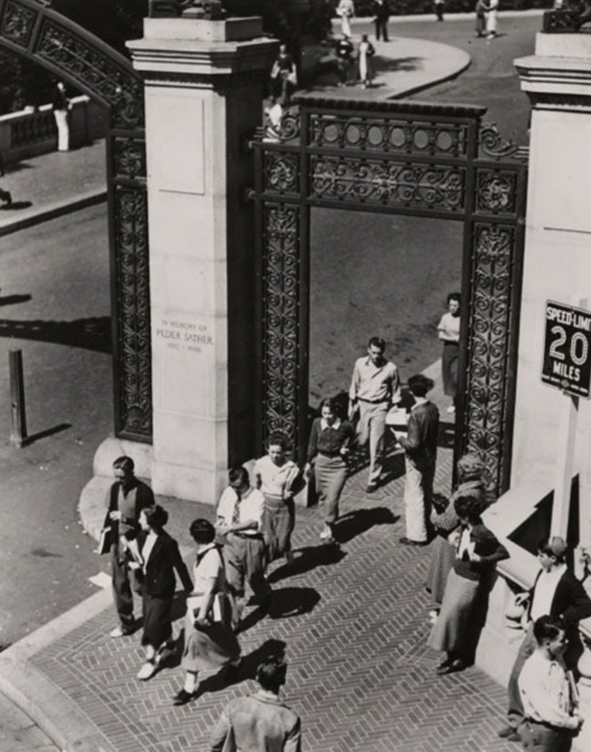
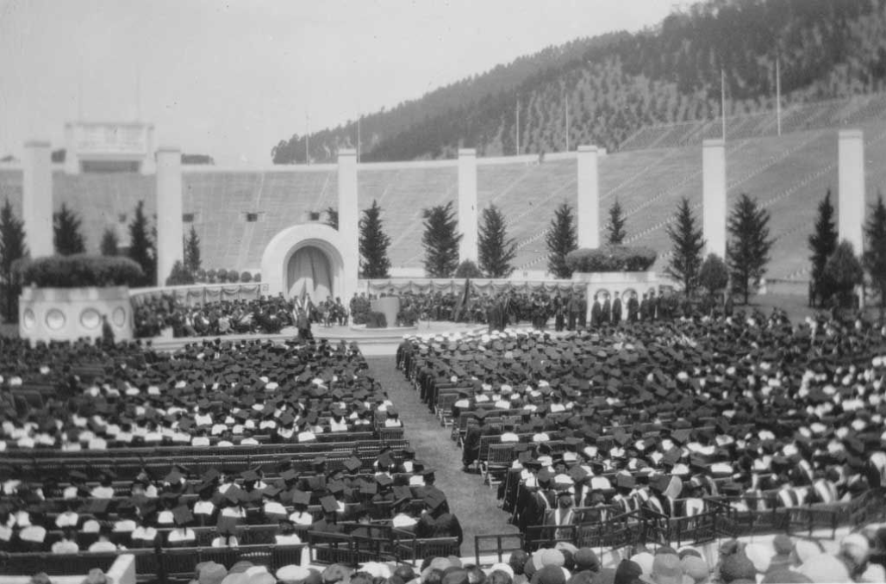
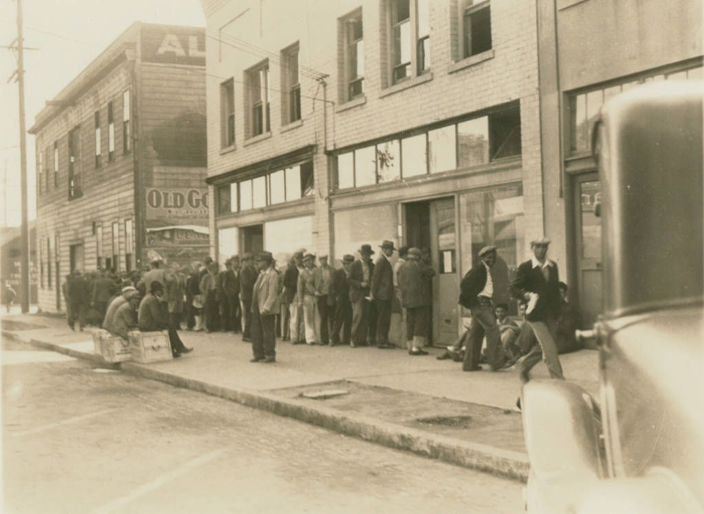
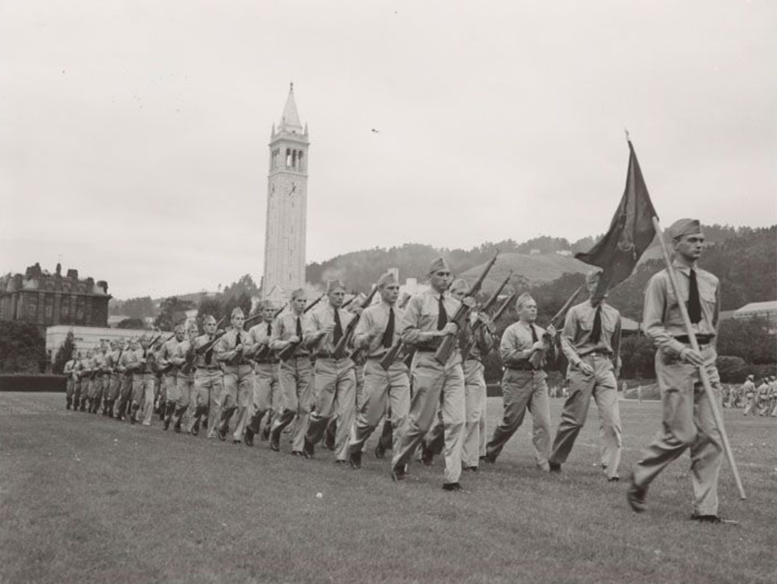
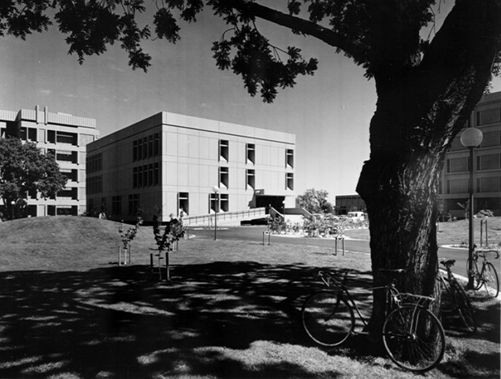
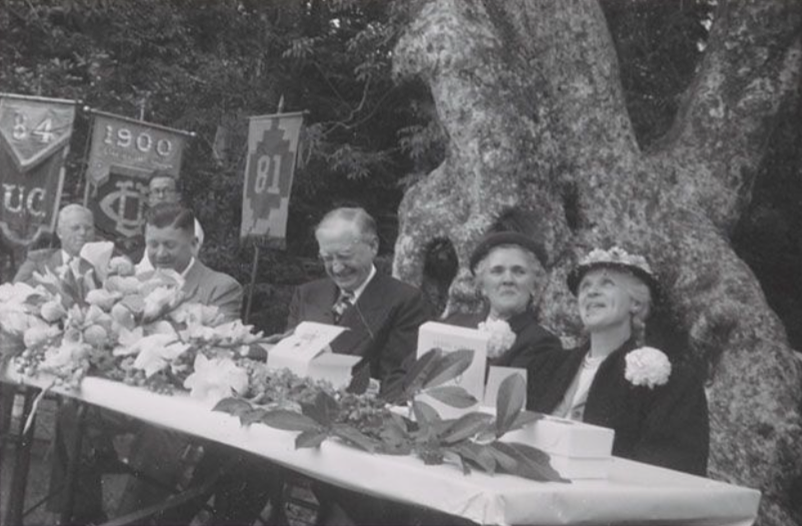

1931-1940
The Great Depression impacted Extension’s ability to maintain its educational offerings, nevertheless, new structural changes allowed for the creation of new resources for professional career development. While other universities across the country spun out their Extensions to become independent colleges with their own standards, faculty and programs, UC held on to its original design of an integrated Extension. As a consequence, control of the Academic Senate grew and to ensure the continuing ability to deliver university credit bearing courses, while providing professional training, Extension offerings were divided into three categories: degree credit, professional upgrading, and noncredit offerings.
Students walking through Sather Gate, c1935, with one student distributing Sather Gate literature. UARC Num.: 4:345
Title: [Graduation ceremony at UC Berkeley] Creator/Contributor: Unknown Date: 1931 Contributing Institution: UC Santa Barbara, Special Research Collections
Title: Bread line at kitchen, 4th and Jefferson [streets], Feb. 1934 [picture]. Creator/Contributor: Unknown Date: 1934 Contributing Institution: Oakland Public Library, Oakland History Center
1941-1950
During World War II, Extension classes and correspondence courses became an important way for service personnel to continue their education. As part of the war effort, Extension’s DirectorProfessor Baldwin Munger Woods took over the Engineering Science Management Defense Training (ESMDT) Program. By the end of the war, hundreds of thousands of research dollars poured into California, spawning new industries and, once again, dramatically increasing the population. UCLA Extension met the critical need for retraining mandated by Southern California’s burgeoning aerospace industry, while UC Berkeley Extension expanded its business and engineering courses across the state. Growth also meant an increased demand for teachers. Extension responded by developing an emergency teacher training program that enabled new teachers to satisfy the state’s credential requirements.With the new UC Santa Barbara campus, a new Extension began offering classes in 1944. All the while, important new programs were developed and implemented. Continuing Education of the Bar (CEB), for example, was established in 1947 by the Regents of the University and the State Bar of California. Today it is one of the country’s largest continuing education programs for lawyers.
Military students drilling on field east of Sproul Hall, 1943 UARC Num.: 4:113i
Title: Physical Sciences and Engineering Library Date: undated Contributing Institution: UC Davis, University Archives
Title: Governor Earl Warren, William Hale, Mrs. Warren and Mrs. Hale Local Call Number: UARC PIC 4:890 (d) From: Commencement Luncheon in Faculty Glade, June 16, 1950 Collection: UC Berkeley Campus Events Contributing Institution: UC Berkeley, University Archives